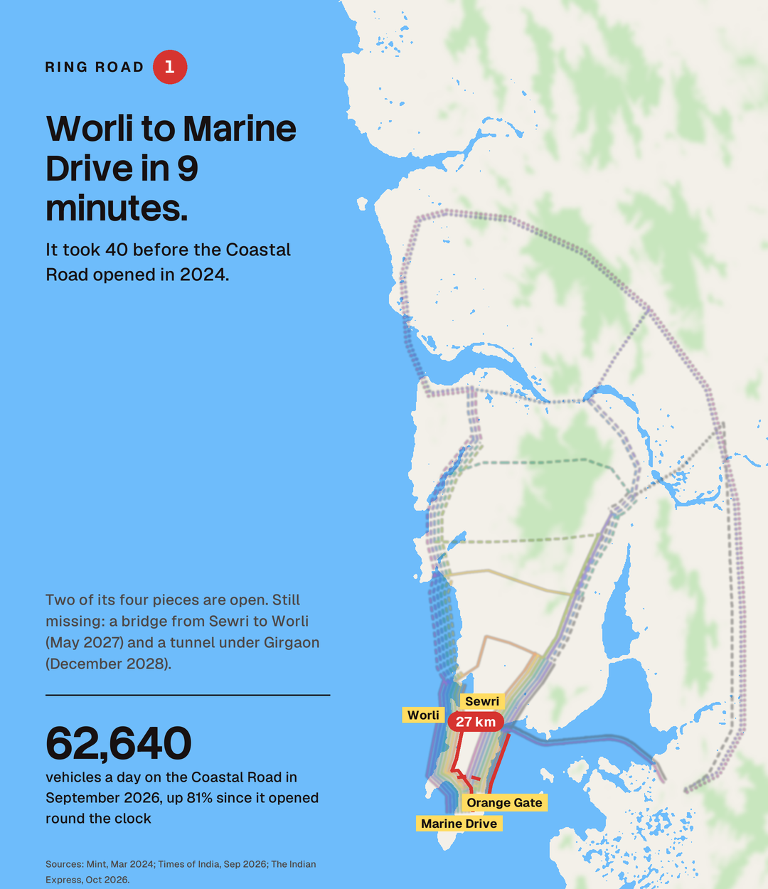
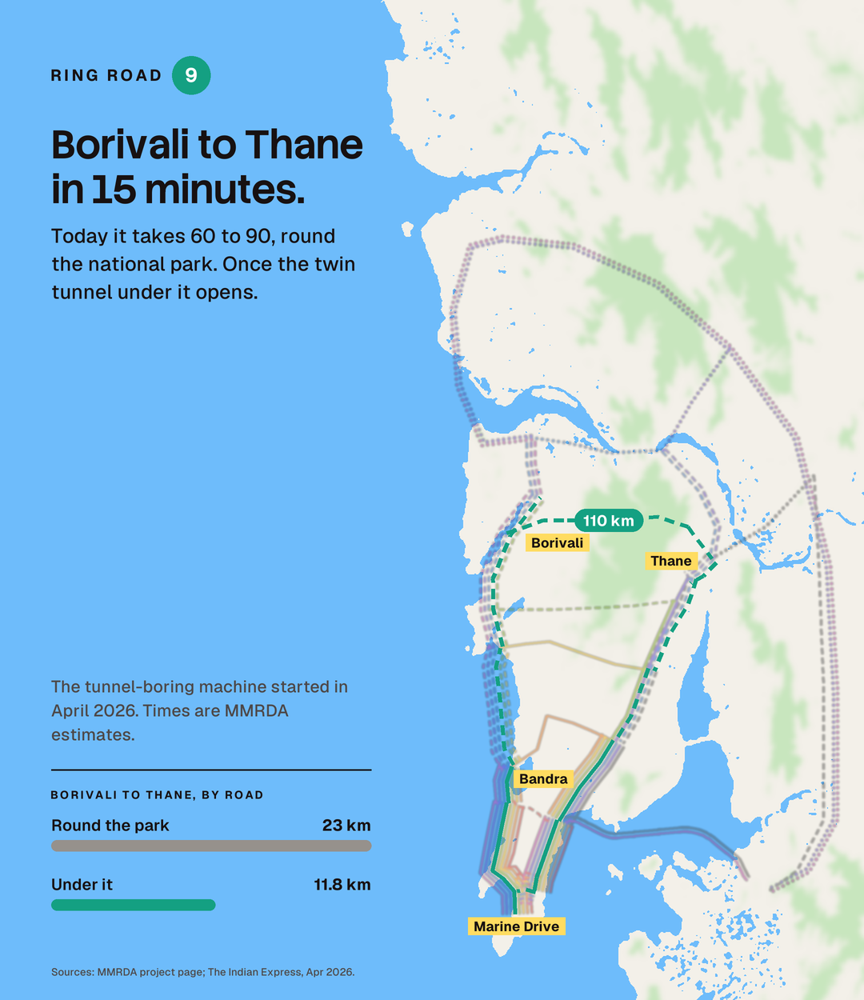

AI Summary
The Mumbai ring road plan from MMRDA has 10 loops round the city. Most of each loop is road you already drive, like the Coastal Road and Atal Setu. The plan builds only the missing links: ₹58,517 crore in the 2024 plan, with a 2029 target. Most are now due in 2027 and 2028.
Key facts
- 10 ring roads are in MMRDA's plan, shown in its video of 3 October 2026. Nine routes are public.
- ₹58,517 crore was the cost of the missing links in the first seven rings, in the 2024 plan (The Indian Express, 23 September 2024).
- Eight of the nine mapped rings close through one tunnel, from Orange Gate to Marine Drive, due December 2028 (Financial Express).
- The smallest loop is 27 km round the island city. The longest with a published length is 197 km.
Last verified: 25 November 2026. Project dates slip often. Check the source next to each figure.
What is the Mumbai ring road project?
The Mumbai ring road project is MMRDA's plan to join existing roads into loops round the city. Mumbai is not building ten new roads. Most of each loop already exists. The plan builds the gaps, so traffic can go round the city instead of through it.
How many ring roads will Mumbai have?
Mumbai will have 10 ring roads under MMRDA's plan. The plan came out in stages. The Indian Express reported the first seven rings on 23 September 2024. MMRDA added two more, the Eighth and Ninth, in August 2026 (Swarajya). Its video of 3 October 2026 shows ten. The route of the tenth is not public yet.
Mumbai ring road map: where does each ring road go?
The map above shows the nine published routes. Find your area in the table below. Each ring road is a loop, so it passes many areas. The last two columns show what is still missing and when it is due.
| Ring road | Length | Runs through | Still missing | Due |
|---|---|---|---|---|
| 1 | 27 km | Marine Drive, Worli, Sewri, Orange Gate | Sewri–Worli bridge, Orange Gate tunnel | May 2027, Dec 2028 |
| 2 | 34 km | Bandra, Santacruz, Chembur | Orange Gate tunnel | Dec 2028 |
| 3 | 67 km | Versova, Andheri, Powai, Vikhroli | Versova–Bandra Sea Link, Eastern Freeway extension | May 2028, no date |
| 4 | 98 km | Goregaon, Aarey, Mulund | Goregaon–Mulund tunnel, Coastal Road north | Dec 2028 |
| 5 | 120 km | Dahisar, Bhayandar, Gaimukh, Thane | Dahisar–Bhayandar link, Bhayandar–Gaimukh road | No firm date |
| 6 | 186 km | Uttan, Virar, Bhiwandi, Thane | Uttan–Virar sea link, Virar–Alibaug corridor | No date |
| 7 | Not published | Virar, Bhiwandi, Panvel, JNPT | Virar–Alibaug corridor | No date |
| 8 | 197 km | Sewri, Atal Setu, Navi Mumbai, Bhiwandi | Saket–Amane road | No date |
| 9 | 110 km | Borivali, Sanjay Gandhi National Park, Thane | Thane–Borivali twin tunnel | Dec 2028 |
Lengths come from MMRDA's 2024 plan and the August 2026 update. Areas are approximate.
How long is each Mumbai ring road?
The Mumbai ring roads range from 27 km to 197 km. Ring Roads 1 to 4 are 27, 34, 67 and 98 km. Ring Roads 9, 5, 6 and 8 are 110, 120, 186 and 197 km. Ring Road 7's length is not published.
Which are Mumbai's inner and outer ring roads?
Ring Road 1 is Mumbai's inner ring road, a 27 km loop round Nariman Point, Worli and Sewri (Free Press Journal). The outer ring roads are 6, 7 and 8. They reach Virar, the JNPT port, Navi Mumbai and Bhiwandi. Ring Road 8 is the one that loops through Navi Mumbai, over Atal Setu.
Find the new homes on your ring road. Relmo shows every new project in Mumbai on one map, with prices and possession dates. See new homes in Mumbai
How does each ring road close its loop?
Each ring road links roads that are open today with a few new pieces. A loop works only when its last piece opens. Below, each ring is described in one answer, with the trip it changes most.
Where does Ring Road 1 go?
Ring Road 1 is the smallest loop, 27 km round the tip of the island city. The Coastal Road and the Eastern Freeway are open. Two pieces are missing: a bridge from Sewri to Worli, due May 2027 (Indian Express), and the Orange Gate tunnel, due December 2028. Worli to Marine Drive already takes about 9 minutes on the Coastal Road, down from 40 (Mint).

Where does Ring Road 2 go?
Ring Road 2 is a 34 km loop out to Bandra and across to Chembur. Almost all of it is open: the Sea Link, the Western Express Highway, the Santacruz–Chembur Link Road and the Eastern Freeway. The last piece is the Orange Gate tunnel. When the Eastern Freeway opened, South Mumbai to Chembur fell to about 20 minutes (Indian Express).
Where does Ring Road 3 go?
Ring Road 3 is a 67 km loop and the first to reach the suburbs. Its west side is the 9.8 km Versova–Bandra Sea Link, due May 2028 (Free Press Journal). From Versova it crosses the city on the JVLR to Vikhroli. Versova to Bandra should fall from 45–60 minutes to 10–15 once the sea link opens (News18).
Where does Ring Road 4 go?
Ring Road 4 is a 98 km loop that crosses the city further north. Its key piece is the Goregaon–Mulund Link Road, with twin tunnels under Aarey and the national park. Digging began in August 2026. Goregaon to Mulund should fall from about 90 minutes to 20 (Times of India).
Where does Ring Road 5 go?
Ring Road 5 is a 120 km loop round Mira Road and Bhayandar, back through Thane. It needs a new link from Dahisar to Bhayandar and a road from Bhayandar to Gaimukh. The Dahisar link should cut a one-hour trip to 5 minutes (Indian Express).
Where does Ring Road 6 go?
Ring Road 6 is a 186 km loop and the first to reach Virar. It needs a new sea link from Uttan to Virar and the Virar–Alibaug corridor. Both are still on paper. Virar to South Mumbai should fall from 1.5–2 hours to 45–55 minutes with the sea link (Indian Express).
Where does Ring Road 7 go?
Ring Road 7 is the widest loop. It runs up to Virar, east along the Virar–Alibaug corridor to the JNPT port, and back over Atal Setu. The corridor is about 126 km with nine interchanges, and land is still being bought (Mumbai Live). MMRDA has not published its length.
Where does Ring Road 8 go?
Ring Road 8 is the harbour loop, 197 km long. It starts at Sewri, crosses Atal Setu to Navi Mumbai, runs up to Bhiwandi and returns through Thane. Atal Setu cut South Mumbai to Navi Mumbai from about 2 hours to 20 minutes. Over 2 crore vehicles had crossed it by March 2026 (mid-day).
Where does Ring Road 9 go?
Ring Road 9 is a 110 km loop that goes under Sanjay Gandhi National Park. Today the road from Borivali to Thane goes round the park, about 23 km. The twin tunnel under it is 11.8 km long. The tunnel is due December 2028, a date set at the chief minister's review in June 2025 (Free Press Journal). MMRDA says the trip will fall from 60–90 minutes to about 15 (MMRDA).

How much time will the ring roads save?
Ring roads save the most time on trips that today go round an obstacle: a creek, a hill or the national park. Two of these savings are real already. The rest are official estimates for roads still being built.
| Trip | Today | After | Road that changes it | Status |
|---|---|---|---|---|
| Worli to Marine Drive | 40 min | 9 min | Coastal Road | Open since 2024 |
| South Mumbai to Navi Mumbai | About 2 hours | 20 min | Atal Setu | Open since 2024 |
| Orange Gate to Marine Drive | 22–40 min | About 5 min | Orange Gate tunnel | Due Dec 2028 |
| Versova to Bandra | 45–60 min | 10–15 min | Versova–Bandra Sea Link | Due May 2028 |
| Goregaon to Mulund | About 90 min | About 20 min | Goregaon–Mulund tunnel | Due Dec 2028 |
| Dahisar to Bhayandar | About 1 hour | 5 min | Dahisar–Bhayandar link | Being built |
| Borivali to Thane | 60–90 min | About 15 min | Thane–Borivali tunnel | Due Dec 2028 |
| Virar to South Mumbai | 1.5–2 hours | 45–55 min | Uttan–Virar sea link | Planned |
When will Mumbai's ring roads be finished?
Mumbai's ring roads will not finish together. Each loop closes when its last missing piece opens. The 2024 plan aimed for 2029. Today, most missing pieces in the inner rings are due between 2027 and 2028. The outer rings have no firm dates.
| When | What opens | Which rings it helps |
|---|---|---|
| Open now | Coastal Road, Sea Link, Eastern Freeway, JVLR, Atal Setu | All of them |
| May 2027 | Sewri–Worli bridge | 1 |
| May 2028 | Versova–Bandra Sea Link | 3 to 7 |
| Dec 2028 | Orange Gate tunnel, Coastal Road north, Goregaon–Mulund tunnel, Thane–Borivali tunnel | All nine mapped rings |
| No date | Virar–Alibaug corridor, Uttan–Virar sea link, Saket–Amane road | 5 to 8 |
The Coastal Road north is due December 2028, said the chief minister after a site visit (Indian Express).
When will the Sewri–Worli connector open?
The Sewri–Worli connector is due by 31 May 2027, after missing its December 2025 deadline (Indian Express). The 4.5 km elevated road links Atal Setu at Sewri with Worli. Sewri to Worli should then take about 10 minutes, down from about an hour.
When will the Orange Gate–Marine Drive tunnel be complete?
The Orange Gate–Marine Drive tunnel is due in December 2028. Its twin tunnels run under Girgaon and cost ₹8,056 crore. About 1 km had been dug by October 2026 (Times of India). Eight of the nine mapped ring roads close through this tunnel, so it matters more than any other piece.
When will the Versova–Bandra Sea Link open?
The Versova–Bandra Sea Link is due in May 2028 (Free Press Journal). The 9.8 km sea link carries Ring Roads 3 to 7 up the west coast. Versova to Bandra should fall from 45–60 minutes to 10–15.
When will the Goregaon–Mulund Link Road be complete?
The Goregaon–Mulund Link Road's twin tunnel under Sanjay Gandhi National Park is its last big piece. Digging began in August 2026, with a December 2028 target (Times of India). Goregaon to Mulund should then take about 20 minutes instead of 90.
When will the Thane–Borivali tunnel open?
The Thane–Borivali twin tunnel is due in December 2028, a date set at the chief minister's review in June 2025 (Free Press Journal). The 11.8 km tunnel runs under the national park. Its boring machine started in April 2026.
What is the status of the Uttan–Virar sea link?
The Uttan–Virar sea link is approved but has no completion date yet. Once built, it should bring Virar within 45–55 minutes of South Mumbai, down from 1.5–2 hours (Indian Express).
When will the Virar–Alibaug corridor be complete?
The Virar–Alibaug corridor has no firm date. The state approved its first phase in May 2026, and land is still being bought (Mumbai Live). The corridor is about 126 km long, with nine interchanges.
How much will the ring roads cost?
The 2024 plan put the missing links in the first seven rings at ₹58,517 crore. That figure covers about 90 km of new road. It does not include the outer rings added later. Single projects add up fast: the road from Bhayandar to Gaimukh alone is a ₹17,000-crore project (Indian Express).
How is the plan changing in 2026 and 2027?
The plan grew and moved in 2026. MMRDA added the Eighth and Ninth rings in August and showed ten in October. Tunnel boring began under the national park in April (Indian Express). The Sewri–Worli bridge slipped to May 2027. In 2027, watch that bridge open and the Orange Gate tunnel's progress.
Key terms
- Ring road: a road that loops round a city, so traffic can go round the centre instead of through it.
- Missing link: a short new road that joins two existing roads into one loop.
- Sea link: a bridge built out over the sea, along the coast.
- Tunnel boring machine: the machine that digs a tunnel underground.
- MMRDA, BMC, MSRDC: the public bodies that plan or build these roads.
Where these numbers are uncertain
- Routes are approximate. MMRDA has not published a map document. Our map is drawn from its video and news reports.
- The tenth ring's route is not public. Ring Road 7's length is not published either.
- Some dates come from news reports, not MMRDA documents. The Versova–Bandra Sea Link's May 2028 date is from 2024 reports. The Thane–Borivali tunnel's December 2028 date was set at the chief minister's review in June 2025.
- Most time savings are promises. Only the Coastal Road and Atal Setu figures describe roads that are open.
- Sources differ on Virar to Alibaug. Some say the corridor saves 90 minutes. Others say the trip will take 90 minutes.
Sources
- The Indian Express, 23 September 2024: MMRDA's seven-ring plan and the ₹58,517 crore missing-link table (print, reposted by MMRDA).
- MMRDA on X, 31 August and 3 October 2026: the Eighth and Ninth rings, and the video of ten rings.
- Traffic and time figures: Times of India, Indian Express, mid-day and the links in each section above.
- Relmo listings, 25 November 2026.
See new homes along the ring roads on Relmo
Prices and dates below are as listed on Relmo on 25 November 2026. Confirm them with the developer.
- Lodha Aureus, Sewri: near Ring Road 1's new bridge. From about ₹4.7 crore, possession April 2033.
- Godrej Horizon, Wadala: on the Eastern Freeway side of the inner rings. From about ₹4.06 crore, possession September 2028.
- Chandak Highscape City, Chembur: where Ring Roads 2 and 3 meet the Eastern Freeway.
- Shapoorji Pallonji Heartland, Mulund West: at the east end of the Goregaon–Mulund tunnel. From about ₹1.71 crore, possession June 2028.
- Ashish Windermere, Bhayandar West: near the new Dahisar–Bhayandar link. From about ₹1.14 crore, possession December 2028.
FAQs
Does Mumbai have a ring road today?
Not a complete one. Large parts already exist, like the Coastal Road, the Sea Link, the Eastern Freeway and Atal Setu. No loop is closed yet. Ring Road 1 should close by December 2028.
Is there a Mumbai ring road map PDF?
No official PDF is public. MMRDA showed the routes in a video in October 2026, and The Indian Express printed the first seven in 2024. The map on this page is drawn from both.
Is there a Navi Mumbai ring road?
Ring Road 8 loops through Navi Mumbai. It crosses Atal Setu from Sewri, runs up to Bhiwandi and returns through Thane.
What is a ring road?
A ring road is a road that loops round a city. Traffic can then go round the centre instead of through it.
Who is building Mumbai's ring roads?
MMRDA, BMC and MSRDC build different pieces. MMRDA plans the network and builds most of the tunnels and links.